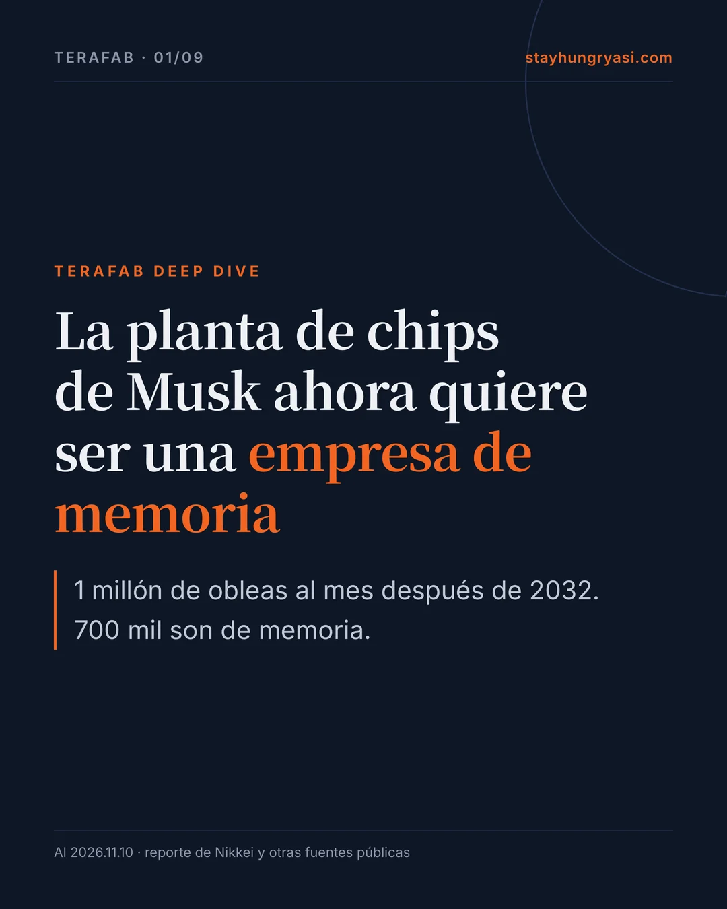
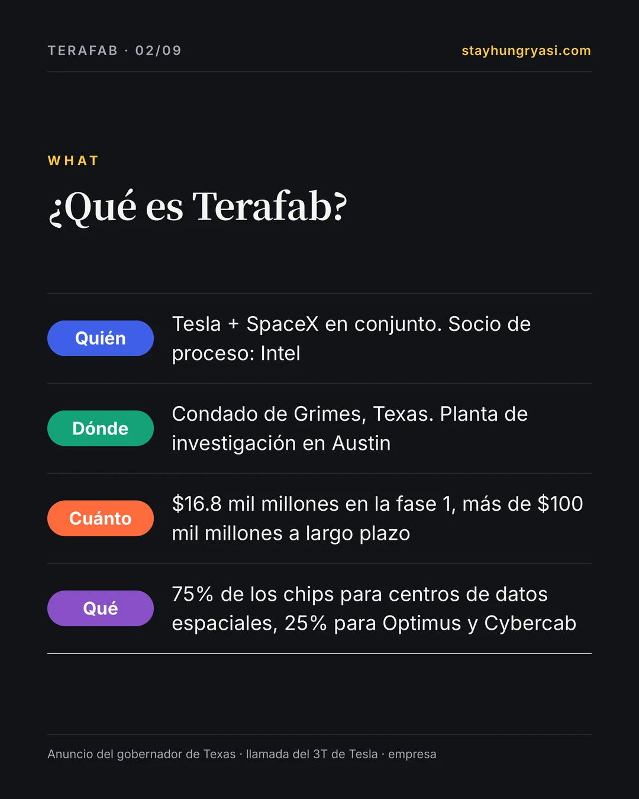
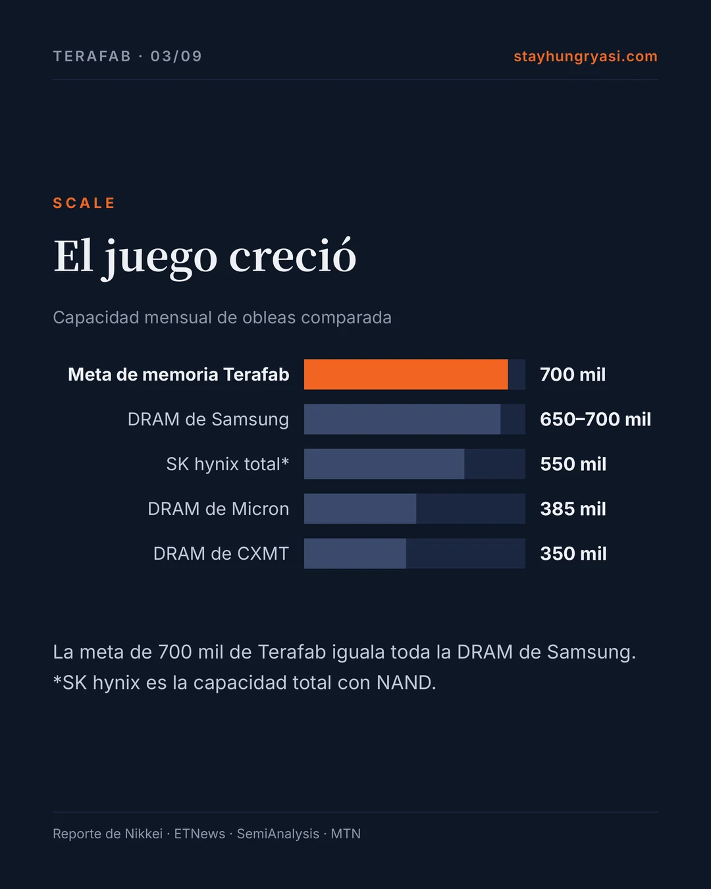
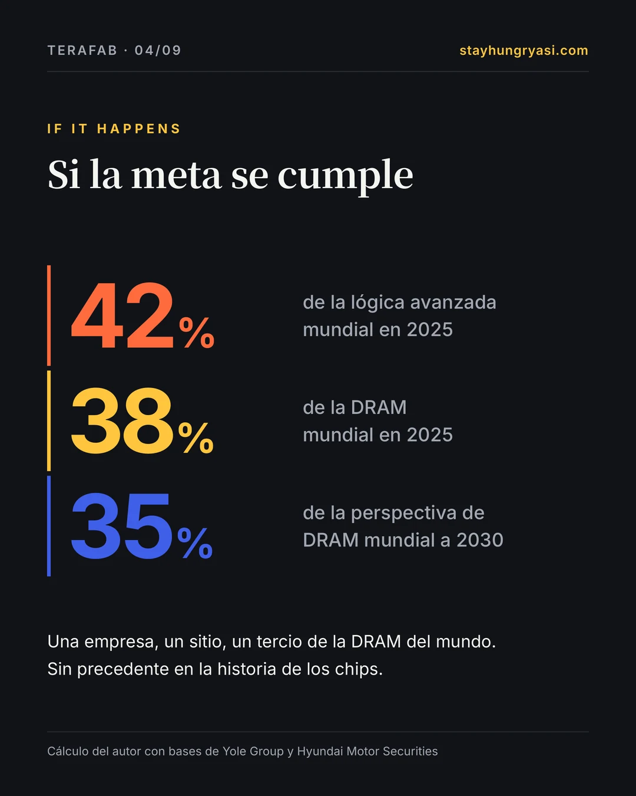
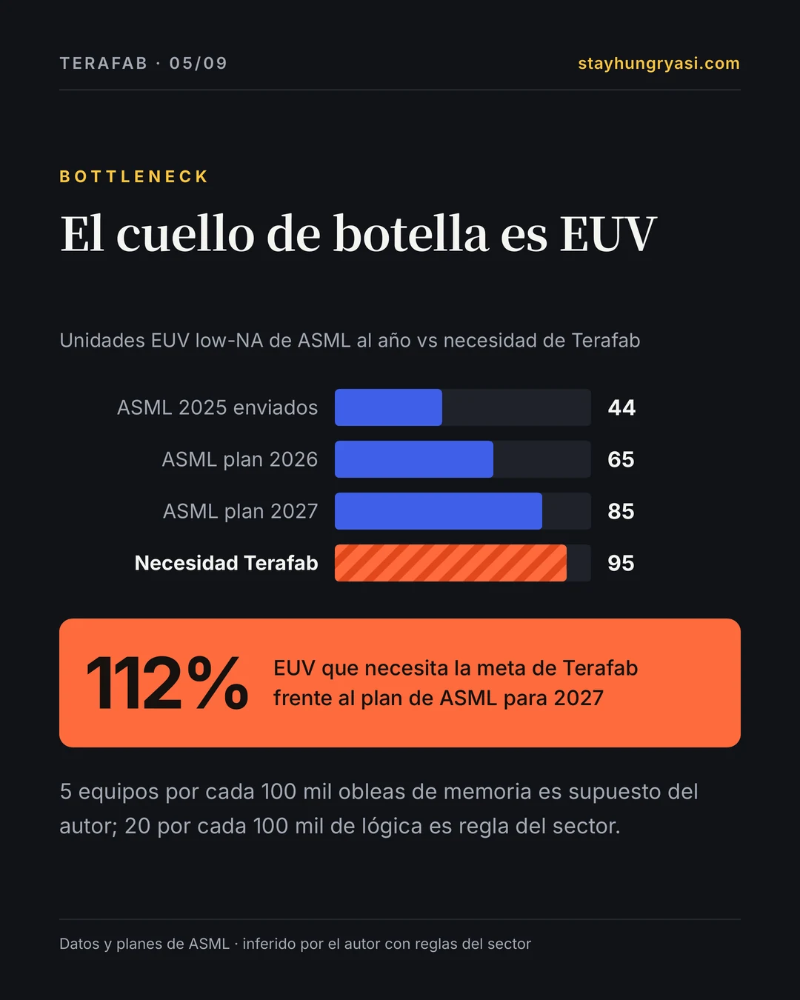
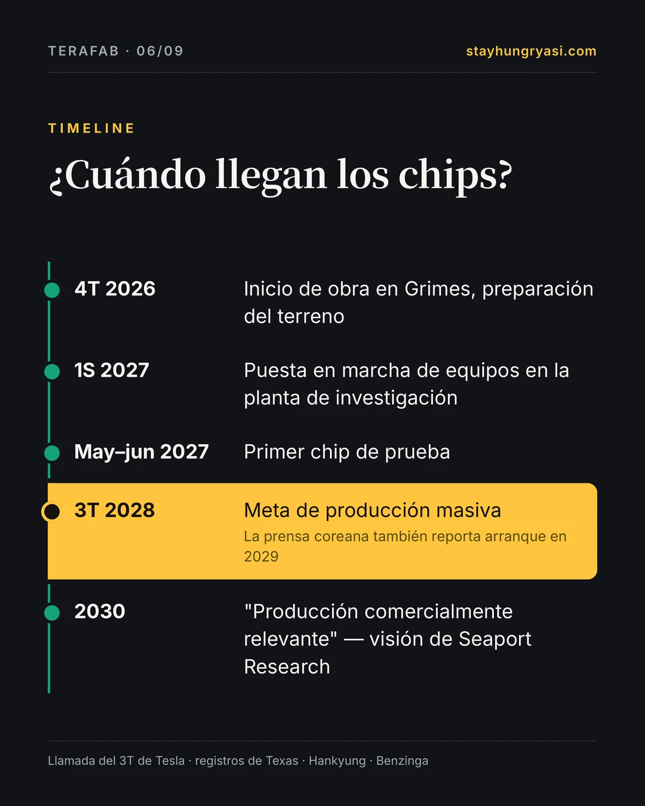
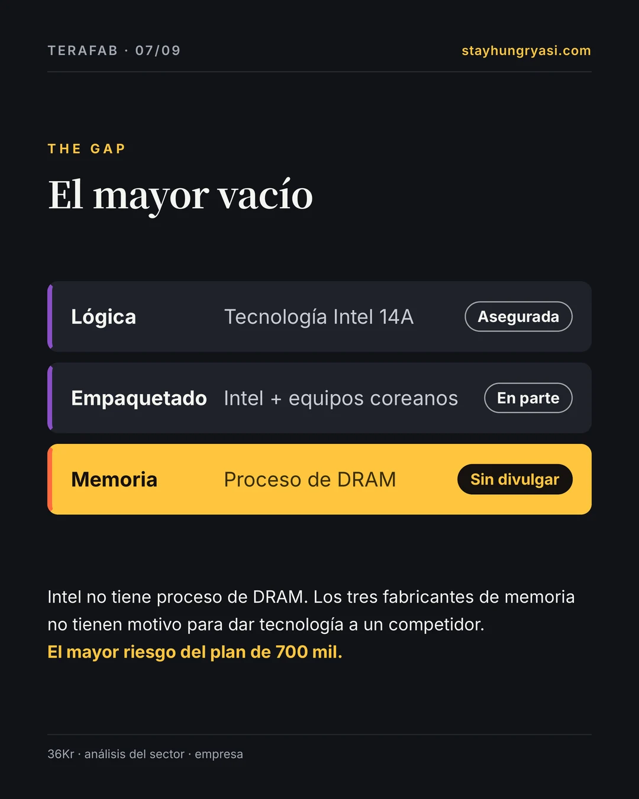
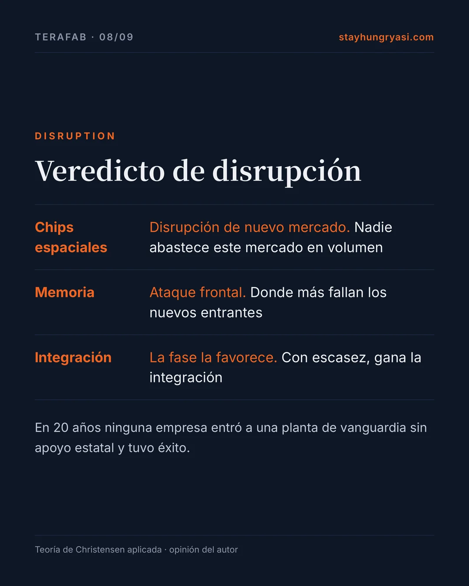
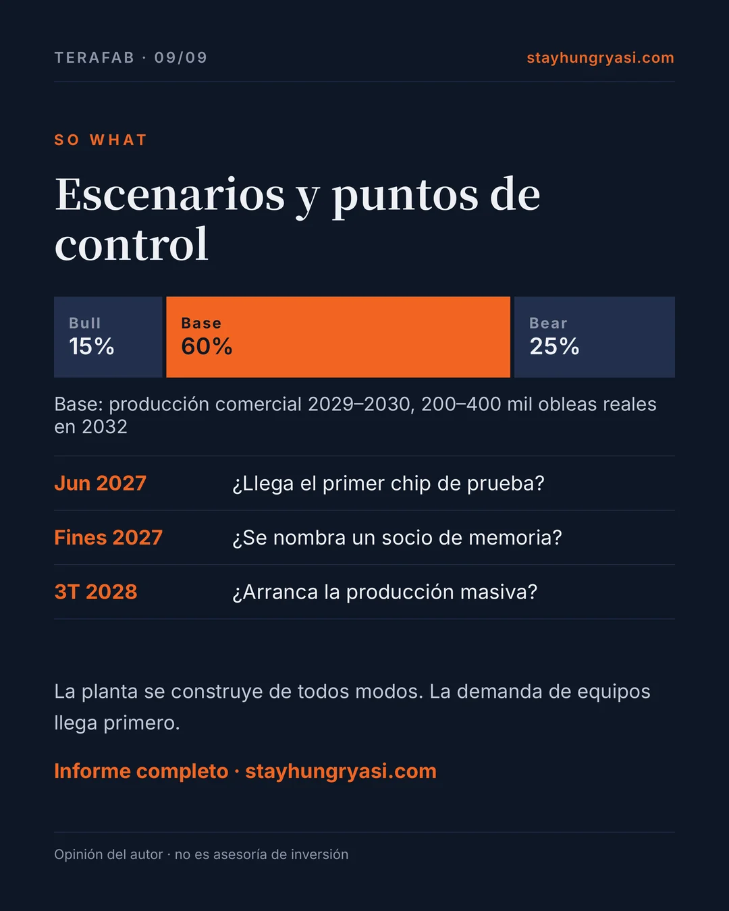

Datos al 10 de noviembre de 2026 (hora de Corea) · stayhungryasi.com
Etiquetas: [Hecho] hecho confirmado · [Empresa] dicho por la empresa · [Prensa] reporte de prensa o estimación del mercado · [Opinión] opinión del autor. Las probabilidades de los escenarios son la opinión subjetiva del autor. Se volvieron a contrastar con su fuente original las 33 afirmaciones del análisis previo.
Aviso: Esta investigación se escribió con IA (Claude). No es asesoría de inversión.
La historia en 9 tarjetas
Lo esencial en nueve tarjetas. Haz clic en una imagen para ampliarla.


















Resumen
Terafab es la planta de chips que Tesla y SpaceX construyen en Texas. Un reporte de Nikkei del 9 de noviembre elevó la meta a 1 millón de obleas al mes después de 2032, 700 mil de ellas de memoria. Es más o menos el tamaño de toda la operación de DRAM de Samsung Electronics. Con los pedidos de equipos ya empezó a moverse dinero real. Pero de dónde vendrá la tecnología de memoria, el rendimiento y cómo se repartirán los costos las dos empresas sigue sin definirse.
| Concepto | Detalle | Base |
|---|---|---|
| Inversión de la fase 1 | $16.8 mil millones · condado de Grimes, Texas | [Hecho] anuncio del gobernador de Texas |
| Inversión a largo plazo | Más de $100 mil millones · reparto de costos sin definir | [Empresa] llamada del 3T de Tesla |
| Capacidad final | 1 millón de obleas al mes (memoria 700 mil · lógica 300 mil o más) | [Prensa] Nikkei |
| Primer chip de prueba | Mayo–junio de 2027 | [Empresa] llamada del 3T de Tesla |
| Producción masiva | Meta en el 3T de 2028 · también se reporta arranque en 2029 | [Empresa] / [Prensa] Hankyung |
| Uso de los chips | Centros de datos espaciales 75% · Optimus y Cybercab 25% | [Hecho] anuncio de la empresa |
| Socio de proceso | Intel 14A · en negociación con TSMC (sin acuerdo) | [Hecho] empresa y prensa |
En una línea [Opinión] — La planta se va a construir. Pero mientras nada respalde las "700 mil obleas de memoria", Terafab sigue siendo un plan.
1. Qué cambió en los últimos 30 días
| Fecha | Detalle | Base |
|---|---|---|
| 2026-10-20 | Llamada del 3T de SpaceX: producción masiva en la planta principal prevista para el 3T–4T de 2028 | Empresa |
| 2026-10-20 | SpaceX en el 3T: ingresos de $14.6 mil millones, utilidad neta de $4.4 mil millones, inversión trimestral de $19.6 mil millones | Hecho |
| 2026-10-21 | Llamada del 3T de Tesla: puesta en marcha de equipos en el 1S de 2027, primer chip de prueba en mayo–junio, producción masiva en el 3T de 2028 | Empresa |
| 2026-10-21 | Llamada de Tesla: decenas de miles de millones en equipos hasta inicios de 2028, más de $100 mil millones a largo plazo, reparto de costos Tesla–SpaceX sin definir | Empresa |
| 2026-10 | TSMC solo participa si opera la planta; Musk solo acepta alquilarle parte del cuarto limpio — sin acuerdo | Hecho |
| 2026-11-06 | Musk reitera la meta de reducir el desarrollo de un chip de un año a un mes | Empresa |
| 2026-11-09 | Nikkei: 1 millón de obleas al mes después de 2032 (unas 700 mil de memoria, al menos 300 mil de lógica) | Prensa |
| 2026-11-09 | Nikkei: compradores visitaron Japón e hicieron pedidos urgentes de equipos (algunos con entrega en meses, proveedores sin nombre) | Prensa |
| 2026-11-09 | ASML y otras acciones de equipos de chips rebotan tras el reporte | Hecho |
2. Primer anuncio vs hoy
El calendario y los socios retrocedieron, mientras la meta de producción creció. Es un patrón común en los proyectos de Musk; la diferencia esta vez es que los pedidos de equipos vienen detrás. [Opinión]
| Concepto | Primer anuncio | Hoy | Señal |
|---|---|---|---|
| Inversión | $20–25 mil millones (marzo) | Fase 1 $16.8 mil millones / solicitud local $55–119 mil millones / más de $100 mil millones a largo plazo | Mixto |
| Sitio | Junto a la sede de Tesla en Austin | Austin = planta de investigación, condado de Grimes = producción masiva | Neutral |
| Proceso lógico | 2 nm | Empezó con Intel 18A → cambió a 14A | Retroceso |
| Socios | Construcción propia | Intel + negociación con TSMC (sin acuerdo) | Retroceso |
| Calendario | Producción inicial en 2027, masiva en 2028 | Chip de prueba a mediados de 2027, producción masiva en el 3T de 2028 (Hankyung reporta arranque en 2029) | Retroceso |
| Producción | 100 mil obleas al mes al inicio → 1 millón al final | 1 millón de obleas al mes después de 2032, 70% de memoria | Expansión |
| Uso de los chips | Tesla 20% / chips espaciales 80% (abril) | Tesla 25% / centros de datos espaciales 75% (agosto) | Neutral |
| Carácter vinculante | Ninguno | La solicitud de la OPI lo llama 'marco general'; finanzas, PI y compromisos se acordarán después | Retroceso |
| Empleo | Sin divulgar | Más de 3,000 en la fase 1 (gobernador) vs 1,500–1,800 empleos permanentes tras las cuatro fases (estimación del consejo regional) | Contradictorio |
3. Revisando los números
a) Capacidad — obleas al mes, miles
Las cifras de Terafab vienen del reporte de Nikkei. La DRAM de Samsung es el punto medio de una estimación de 650–700 mil (noviembre de 2025). SK hynix es la capacidad total incluida NAND, así que no debe compararse directamente con la meta de memoria. TSMC y Rapidus están implícitos en las proporciones reportadas.
| Comparación | Proporción [Opinión · cálculo] |
|---|---|
| Lógica 300 mil ÷ lógica mundial de menos de 10 nm en 2025 (Yole Group) | 42.4% |
| Memoria 700 mil ÷ DRAM mundial en 2025 (Yole Group) | 37.8% |
| Memoria 700 mil ÷ perspectiva de DRAM mundial para 2030 (Hyundai Motor Securities) | 35.0% |
Si la meta se cumple, una sola empresa en un solo sitio haría un tercio de la DRAM del mundo. No hay precedente en la historia de los chips. No se ha divulgado si las 700 mil son solo DRAM o si incluyen NAND o HBM. [Opinión]
b) El equipo cuello de botella — escáneres EUV
Las cifras de ASML son reales y planes de la empresa (2028 se calcula con la ampliación adicional de 30% en revisión). Las necesidades de Terafab se infieren con 20 equipos por cada 100 mil obleas de lógica (regla del sector) y 5 por cada 100 mil de memoria (supuesto del autor).
La meta completa de Terafab requiere unos 95 equipos EUV. Es el 112% del plan de producción de ASML para 2027, y solo la lógica es el 71%. ASML ya dijo que su capacidad 2027–28 no alcanza la demanda de sus clientes. Terafab tendrá que hacer fila junto a Samsung, SK hynix y TSMC. [Opinión]
c) Capital — miles de millones de dólares, escala logarítmica
En escala logarítmica, las diferencias reales son mucho mayores de lo que sugieren las barras. La estimación de Bernstein (1 TW completo) es unas 300 veces la fase 1.
El financiamiento está claramente mejor que en marzo. SpaceX pasó a una utilidad neta de $4.4 mil millones en el 3T y tiene unos $90 mil millones en efectivo y valores. Pero planea invertir $35–40 mil millones solo en el 4T, sobre todo en centros de datos. Cuánto se ha destinado realmente a Terafab no se ha divulgado. [Hecho]
d) Personal
| Concepto | Cifra | Fuente | Grado |
|---|---|---|---|
| Empleos permanentes de la fase 1 | Más de 3,000 | Oficina del gobernador de Texas | Empresa |
| Trabajadores de construcción (en obra) | 4,000–5,000 | Estimación del consejo económico de Brazos | Mercado |
| Empleos permanentes tras las cuatro fases | 1,500–1,800 | Estimación del consejo económico de Brazos | Contradictorio |
| Aumento de vacantes publicadas | Cerca de 50% sobre el promedio de 2025 | Blog de un vendedor de accesorios (secundario) | No verificado |
| Personal necesario con 1 millón de obleas al mes | Decenas de miles | Opinión del autor (sin datos duros) | Opinión |
Los 3,000 del gobernador y los 1,500–1,800 del consejo regional no coinciden. En cualquier caso son muy pocos para 1 millón de obleas al mes. Es probable que el personal sea un cuello de botella mayor que los equipos. [Opinión]
e) Rendimiento — sin cifras publicadas
Terafab nunca ha divulgado un rendimiento. Los analistas suponen 80% en lógica y 70% en HBM para un nuevo entrante. Abajo está el rango estimado por el autor. [Opinión]
| Año | Rango estimado | Nota |
|---|---|---|
| 2027 | — | Etapa de chip de prueba; el rendimiento casi no aplica |
| 2028 | 20~40% | Arranca la producción masiva; aún no competitivo |
| 2029 | 40~65% | Fase de curva de aprendizaje |
| 2030 | 60~80% | Punto de 'producción comercialmente relevante' según Goldberg |
| 2031 | 75~85% | Podría alcanzar el supuesto para nuevos entrantes |
4. El mayor vacío: de dónde viene la tecnología
La lógica tiene una fuente: Intel 14A. También se reporta que Gary Jiang, con 17 años en Intel, fue contratado para liderar la transferencia de 14A. Pero nunca se ha divulgado la fuente de la tecnología de proceso de DRAM detrás de 700 mil obleas de memoria al mes. Intel no tiene proceso de DRAM, y los tres fabricantes de memoria no tienen motivo para entregar tecnología clave a un competidor. Este vacío es el mayor riesgo de Terafab. [Opinión]
| Línea de producto | Fuente tecnológica | Divulgación | Riesgo |
|---|---|---|---|
| Lógica | Licencia de Intel 14A (se habla de una transferencia tipo IBM–AMD) | Divulgado en parte | Medio |
| Memoria (DRAM, HBM) | Sin divulgar | Sin divulgar | Máximo |
| Empaquetado avanzado | EMIB/Foveros de Intel (reportado) + equipos coreanos | Divulgado en parte | Medio |
| Chips espaciales endurecidos a la radiación (D3) | Diseño propio de SpaceX | Proceso sin divulgar | Alto |
| Máscaras y pruebas | Previstas en casa dentro de la planta de investigación | Dicho por la empresa | Medio |
5. Diagnóstico de disrupción
| Línea de producto | Tipo según Christensen | Razonamiento |
|---|---|---|
| Chips espaciales endurecidos a la radiación | Disrupción de nuevo mercado | Nadie suministra cómputo de IA de grado espacial en volumen. Es un punto de apoyo que los incumbentes ignoran. |
| Chips de inferencia en el borde | Sostenida · internalización | Para Optimus y Cybercab. El mercado ya existe. El objetivo es asegurar el suministro y la velocidad de iteración, no la disrupción. |
| 700 mil obleas de memoria | Ataque frontal sostenido | El mismo producto en el mismo mercado que Samsung, SK hynix y Micron. El camino donde más han fallado los nuevos entrantes. |
| La estructura integrada | Una fase que favorece la integración | El cómputo de IA y la memoria escasean. Encaja con la teoría de modularidad de Christensen, según la cual las empresas integradas ganan mientras el desempeño aún no basta. |
Cadena de valor. Lógica, memoria, empaquetado, pruebas y máscaras bajo un mismo techo. El mayor comprador intenta revertir 30 años de una estructura dividida: diseño sin planta, fundición, memoria y back-end.
Velocidad y demanda. La meta de reducir el desarrollo de un chip de un año a un mes, una demanda cautiva que no necesita clientes externos y contar la demanda en "teravatios" en vez de obleas la distinguen de entrantes anteriores. El ciclo de un mes aún no tiene evidencia que lo respalde. [Opinión]
6. Tasas base — cómo les fue a los entrantes anteriores
| Entrante | Apoyo estatal | Resultado | Tiempo | Veredicto |
|---|---|---|---|---|
| Rapidus (Japón, 2 nm) | Sí | Subsidios de ¥2.354 billones, producción de prueba a fines de 2026, producción masiva prevista en 2027 | Fundada en 2022 → unos 5 años | En curso |
| CXMT (China, DRAM) | Sí | Participación de 1% en 2020 a 7–8%; 350 mil obleas al mes (estimación a fines de 2026) | Unos 10 años | Éxito parcial |
| Lógica avanzada en China | Sí | Contrató a miles de ingenieros de TSMC y la brecha sigue | Más de 10 años | No alcanzó |
| Intel 18A (incumbente) | Parcial | Problemas de rendimiento en un nodo nuevo pese a 50 años de experiencia | En curso | En curso |
| Batería 4680 de Tesla (Musk) | No | Considerada decepcionante frente al plan (opinión de un blog personal, evidencia débil) | 2020– | No alcanzó |
| Cohetes reutilizables de SpaceX (Musk) | No | Comercializados pese al escepticismo de la industria | Unos 13 años | Éxito |
En los últimos 20 años ninguna empresa entró a la lógica avanzada o a la DRAM sin apoyo estatal y tuvo éxito. Incluso CXMT, con respaldo estatal, tardó 10 años en llegar a una participación de un dígito. Terafab solo se distingue en dos cosas: demanda cautiva y dinero. [Opinión]
7. Caso bajista
| Severidad | Riesgo | Detalle |
|---|---|---|
| Máximo | Falta la fuente de tecnología de memoria | No se ha divulgado de dónde vendrá la tecnología de proceso para 700 mil obleas de memoria al mes |
| Alto | Tecnología y rendimiento | GAA por debajo de 2 nm, donde pequeñas desviaciones hunden el rendimiento. Sin cifras de rendimiento |
| Alto | Calendario | Proveedores de equipos dicen que el primer lote pequeño difícilmente llegará antes de 2028 (Goldberg) |
| Alto | Capital | Más de $100 mil millones a largo plazo vs $5 billones de Bernstein; reparto sin definir; compite con el gasto en centros de datos |
| Alto | Personal | 3,000 en la fase 1, estimaciones de empleo permanente contradictorias, pugna por talento con Corea y Taiwán |
| Medio | Gobierno corporativo | Ni Tesla ni Intel están obligadas a quedarse (solicitud de la OPI) |
| Medio | Conflicto entre socios | Líneas de Intel 14A y TSMC en un mismo sitio exigirían separar la PI |
| Medio | Rechazo local | Unos 900 residentes pidieron más supervisión; se aprobó una exención de impuesto predial por 35 años |
8. Escenarios
| Escenario | Octubre | Noviembre | Cómo se ve |
|---|---|---|---|
| Bull | 15% | 15% | Producción masiva en 2028, rendimiento lógico competitivo en 2030, más de 500 mil obleas en 2032, reemplaza algunas GPU de Nvidia |
| Base | 55% | 60% | Planta de investigación opera en 2027, producción comercial en 2029–2030, 200–400 mil obleas reales en 2032, depende de socios |
| Bear | 30% | 25% | Retrasos de 2 años o más, menor escala, termina siendo un contrato externo de suministro a largo plazo |
Los pedidos de equipos ya empezaron y SpaceX volvió a la rentabilidad, así que se redujo Bear. La expansión en memoria hace la tarea más difícil, así que Bull no cambió. Lo importante es que la demanda de equipos aparece en 2027–2030 incluso en el caso Base. Lograr solo 20–40% de la meta aún requiere equipos nuevos para 200–400 mil obleas al mes. [Opinión]
9. Estructura de la cadena de valor
Esto describe la estructura del impacto y no es una recomendación de compra o venta de ninguna acción. Donde la base es "Solo expectativa" u "Opinión del autor", no hay pedidos confirmados.
| Grupo | Empresa | País | Base | Detalle |
|---|---|---|---|---|
| Gana en cualquier escenario | ASML | Países Bajos | Demanda reportada | Incluyó la demanda de Terafab en sus planes de capacidad 2027–28 (Reuters) |
| Gana en cualquier escenario | Applied Materials | EE. UU. | Pedido reportado | Pedidos de equipos de front-end reportados en el 2T |
| Gana en cualquier escenario | Lam Research | EE. UU. | Pedido reportado | Pedidos de equipos de front-end reportados en el 2T |
| Gana en cualquier escenario | Tokyo Electron | Japón | Pedido reportado | Pedidos del 2T reportados; pedidos urgentes en Japón en noviembre (proveedores sin nombre) |
| Ganancia condicional | Hanmi Semiconductor | Corea | Reportes contradictorios | Hankyung (14 de septiembre) reportó una orden de compra de equipos de empaquetado; Asia Economy (2 de octubre) reportó que no hay pedido confirmado (en conversación). Compró 50 mil millones de wones en acciones de SpaceX en junio |
| Gana en cualquier escenario | HPSP | Corea | Pedido reportado | Equipo de prueba de recocido con hidrógeno a alta presión (HPA) con entrega reportada a la planta de investigación de Austin en el 1S de 2027 (Asia Economy, 2 de octubre) |
| Ganancia condicional | Intel | EE. UU. | Acuerdo divulgado | Referencia de 14A. Si es una licencia, no son ingresos de sus plantas |
| Ganancia condicional | TSMC | Taiwán | En negociación | Gana si obtiene el control operativo; poco si solo alquila cuarto limpio |
| Ganancia condicional | Micron | EE. UU. | Solo expectativa | Candidata a socio tecnológico de DRAM (opinión del autor). La frase sobre 'asegurar volumen' no está verificada |
| Ganancia condicional | Wonik IPS, Jusung Engineering, PSK | Corea | Solo expectativa | Si el plan de 700 mil obleas de memoria se concreta. Sin reportes de pedidos |
| Ganancia condicional | Soulbrain, Dongjin Semichem | Corea | Solo expectativa | Materiales. Sin reportes de pedidos |
| Gana a corto plazo, riesgo a largo plazo | Samsung Electronics | Corea | Acuerdo confirmado | Producción de prueba de AI5 en Texas, contrato de AI6 por $16.5 mil millones. A largo plazo surge un competidor en DRAM |
| Gana a corto plazo, riesgo a largo plazo | SK hynix | Corea | Opinión del autor | Demanda externa de HBM hasta 2030. Pierde un gran cliente después de 2032 en el caso Bull |
| Perjudicado (solo caso Bull) | Nvidia | EE. UU. | Opinión del autor | Algunas GPU para centros de datos espaciales se reemplazan con chips propios |
| Perjudicado (solo caso Bull) | Simmtech, Daeduck Electronics | Corea | Opinión del autor | Sustratos y empaquetado amenazados si el back-end de EE. UU. se vuelve autosuficiente (análisis de noviembre de 2025) |
10. Qué vigilar en los próximos 24 meses
| Cuándo | Punto de control | Señal de alerta |
|---|---|---|
| 4T 2026 | Grimes pasa de preparar el terreno a la obra principal (inicio de obra en octubre) | Sin obra principal en el 1S de 2027 |
| Ene 2027 | Llamada del 4T de Tesla: acuerdo de reparto de costos | Sin contrato vinculante a mediados de 2027 |
| 1S 2027 | Puesta en marcha de equipos en la planta de investigación, llegada de EUV | La puesta en marcha se va al 2S |
| May–jun 2027 | Primer chip de prueba | Se retrasa más allá del 4T de 2027 |
| En 2027 | Se divulga el socio tecnológico de DRAM | Sin divulgar a fines de 2027 → el plan de 700 mil no es creíble |
| En 2027 | Resultado de la negociación con TSMC | TSMC obtiene el control operativo → se debilita la tesis de 'planta propia' |
| 2027 | Producción de riesgo de Intel 14A, clientes externos | Retraso en el calendario de 14A |
| Cada trimestre | Si se divulga por separado el gasto en Terafab | Se recorta el gasto en Terafab a favor de centros de datos |
| Cada trimestre | Menciones en las llamadas de ASML, TEL y AMAT | Los fabricantes de equipos sacan a Terafab de sus perspectivas |
| 3T 2028 | Inicio de la producción masiva | Se pospone oficialmente a 2029 o después |
11. Resumen en tres frases
- Terafab es la planta de chips más grande jamás planeada, que Musk construye en Texas para fabricar él mismo chips de IA y memoria para Tesla y SpaceX.
- Aún no ha salido ningún chip; el primer chip de prueba está previsto para mediados de 2027 y la producción plena para la segunda mitad de 2028. Asegurar la tecnología de memoria y la tasa de defectos son los mayores obstáculos.
- La planta se construye tenga éxito o no, así que la demanda de equipos llega primero; para los fabricantes de memoria actuales significa demanda por ahora y una variable competitiva después de 2030.
Notas de verificación
Se volvieron a contrastar con su fuente original las 33 afirmaciones del análisis previo: 19 confirmadas, 8 corregidas en parte, 2 solo prensa, 2 no verificadas y 2 degradadas. Las no verificadas y degradadas se retiraron como apoyo de las conclusiones. Abajo están las que no quedaron simplemente confirmadas.
| Afirmación del análisis previo | Veredicto | Hallazgo |
|---|---|---|
| DRAM de Samsung: 650–700 mil obleas al mes | Corregido en parte | Coincide con la fuente, pero es una estimación de noviembre de 2025 que no incluye ampliaciones posteriores |
| SK hynix: unas 550 mil obleas al mes | Corregido en parte | Capacidad total DRAM+NAND; compararla uno a uno con la memoria de Terafab es incorrecto |
| Lógica 300 mil = 42% de la lógica avanzada mundial de 2025 | Corregido en parte | El cálculo es correcto, pero la base es 2025, así que la proporción del mercado de 2032 es menor |
| Memoria 700 mil = 38% de la DRAM mundial de 2025 | Corregido en parte | 35% frente a la perspectiva de 2030 de 2 millones de obleas al mes. No está claro si las 700 mil son solo DRAM |
| 4,000–5,000 trabajadores de construcción, cuatro fases en 9–10 años | Corregido en parte | La misma fuente estima 1,500–1,800 empleos permanentes tras las cuatro fases, en contradicción con los 3,000 del gobernador. Omitido en el análisis previo |
| Vacantes publicadas cerca de 50% sobre el promedio de 2025 | No verificado | Blog de un vendedor de accesorios para Tesla (secundario). Sin datos primarios |
| Inicio de obra en Grimes el 1 de diciembre | Corregido en parte | La obra arrancó con el acuerdo fiscal a inicios de octubre; a mediados de octubre seguía la preparación del terreno (investigación del hub del 24 de octubre). La fecha del 1 de diciembre para la obra principal es secundaria |
| Hanmi Semiconductor ganó un pedido de equipos de empaquetado de Terafab | Corregido en parte | Hankyung (14 de septiembre) reportó una orden de compra; Asia Economy (2 de octubre) reportó que no hay pedido confirmado — los reportes se contradicen. HPSP es la empresa coreana con entrega reportada. Hanmi compró 50 mil millones de wones en acciones de SpaceX en junio, así que tiene interés |
| 1 millón de obleas al mes después de 2032 (700 mil de memoria) | Solo prensa | Muchos medios citan a Nikkei. No es un anuncio oficial de la empresa |
| Pedidos urgentes a fabricantes japoneses de equipos | Solo prensa | Proveedores y montos sin divulgar |
| Producción masiva en el 3T de 2028 | Corregido en parte | Coincide con lo dicho por la empresa. El reporte de Hankyung del 14 de septiembre da como meta un arranque en 2029 |
| Costo por oblea 30–50% mayor que TSMC | Degradado | Viene de un agregador de noticias con IA; no se encuentra el análisis original. No usar como evidencia |
| La batería 4680 de Tesla como advertencia | Degradado | Opinión de un blog personal. Se conserva como caso pero marcado como evidencia débil |
| Frase de Micron sobre 'asegurar volumen para Tesla' | No verificado | Fuente secundaria; no se encontró la transcripción original |
Relación con investigaciones anteriores
El mapa de beneficiarios por equipo y la estimación de inversión en equipos por fase están en el informe del 24 de octubre, Mapa de equipos de Terafab. Este texto añade el reporte posterior de Nikkei sobre 700 mil obleas de memoria y las llamadas de resultados del 3T, y, como entonces, trata el pedido de Hanmi Semiconductor como "reportes contradictorios".
Fuentes
- Seeking Alpha — Nikkei: 1M wafers a month by 2032
- MarketScale — rush orders to Japanese toolmakers
- ThinkComputers — 700K memory wafers a month
- Not a Tesla App — Tesla Q3 2026 call recap
- EVwire — Tesla Q3 2026 call transcript
- Pulse 2.0 — SpaceX Q3 results
- TechCrunch — SpaceX Q4 capex guidance
- Tom's Hardware — TSMC's condition to run the fab
- eeNews Europe — Intel 14A deal stands
- Futurum — Intel partnership and allocation
- Fox 7 Austin — Texas governor: $16.8B, 3,000 jobs
- KBTX — the real numbers behind the job promises
- Manufacturing Dive — first phase and tax abatement
- eeNews Europe — ASML: 65 EUV in 2026, +30% in 2027
- eeNews Europe — ASML: 2027–28 supply short of demand
- Crypto Briefing — ASML shipped 44 EUV in 2025
- TrendForce — Samsung DRAM 650–700K wafers
- Xenospectrum — Micron 385K, CXMT 350K (SemiAnalysis)
- MTN — SK hynix 550K wafers
- SemiWiki — DRAM about 2M wafers a month by 2030
- Yole Group — global wafer capacity
- Yahoo Finance — about 20 EUV per 100K wafers
- Benzinga — Goldberg interview
- 36Kr — where the memory IP comes from
- Jon Peddie Research — Gary Jiang hire, local pushback
- TrendForce — Hanmi Semiconductor order report
- Asia Economy — HPSP delivery, Hanmi unconfirmed
- Tom's Hardware — yield assumptions
- inews24 — CXMT market share
- Hankyung — Rapidus subsidy
- 3DTested — Bernstein: about $5 trillion
Este análisis se basa en reportes y documentos públicos, tiene fines informativos y no recomienda comprar ni vender ninguna acción. Las cifras son al 10 de noviembre de 2026 y pueden cambiar. Las decisiones de inversión y sus consecuencias corresponden al inversionista. stayhungryasi.com